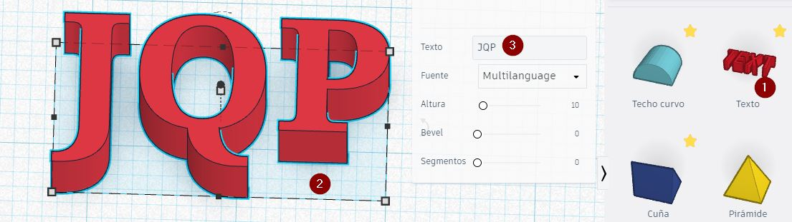
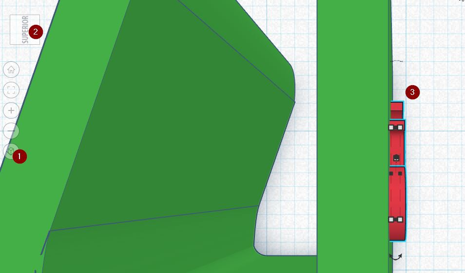
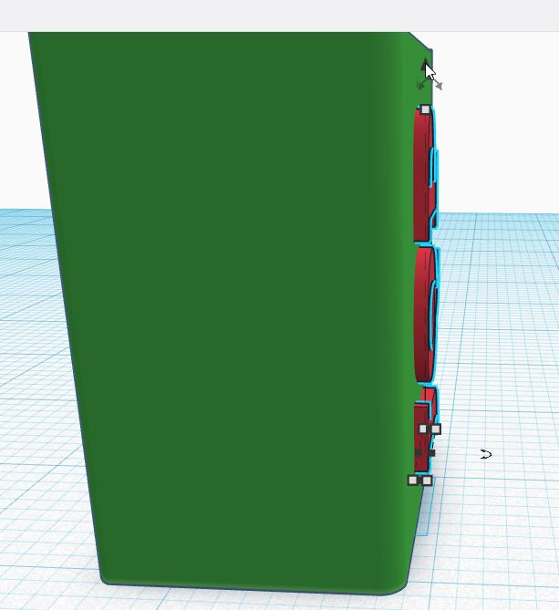
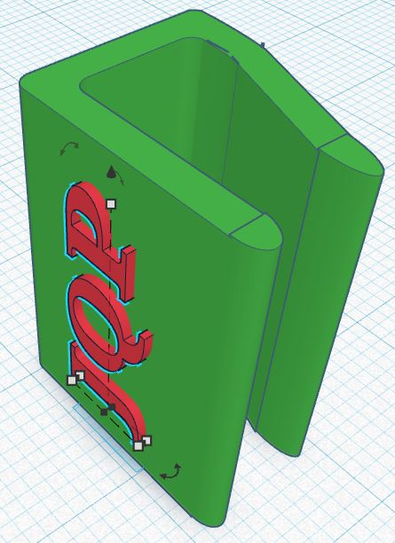
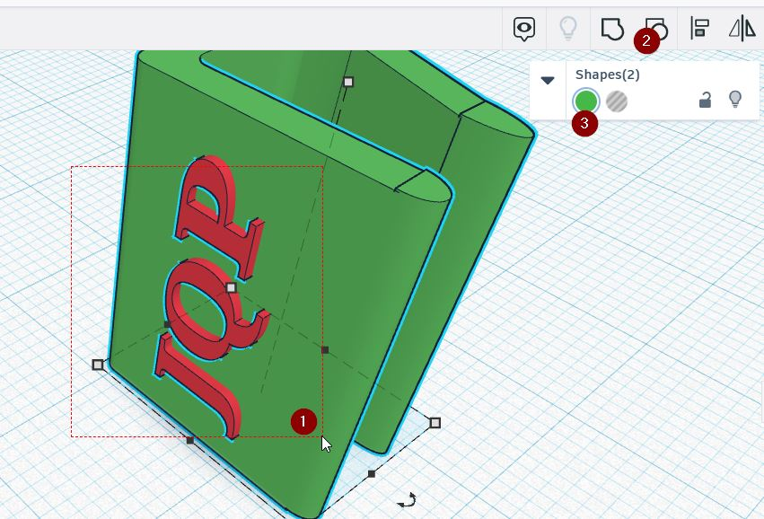
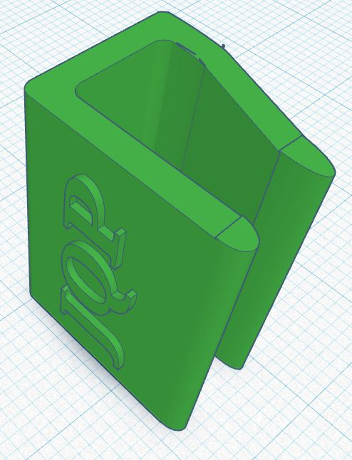
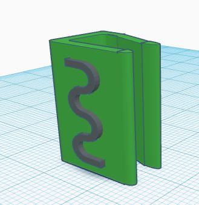

Creando una tapa de la cámara web de un portátil
Parte VI : Tunear.
Vamos a personalizarlo un poco. Elegimos la herramienta texto y ponemos nuestras iniciales:

Y la dimensionamos y rotamos convenientemente para pegarla a la cara de nuestra pieza:

Vamos eligiendo la perspectiva adecuada para ir dimensionando el texto :


Agrupación final :
Ahora sí que podemos seleccionar las dos piezas, el texto y el resto y agruparlo

El resultado final es el siguiente

De esta manera, al realizar dos agrupaciones, ésta y la del capítulo anterior. Si realizamos ahora una desagrupación, nos deja la pieza separada del texto, es decir según la última agrupación:
De esta manera podemos seleccionar el texto y poner otro texto y volver a agrupar, o quitarlo... aquí he puesto el símbolo de Catedu :


IMPRESION BÁSICA 3D por Javier Quintana Peiró bajo licencia Creative Commons Reconocimiento-NoComercial-CompartirIgual 4.0 Internacional License.